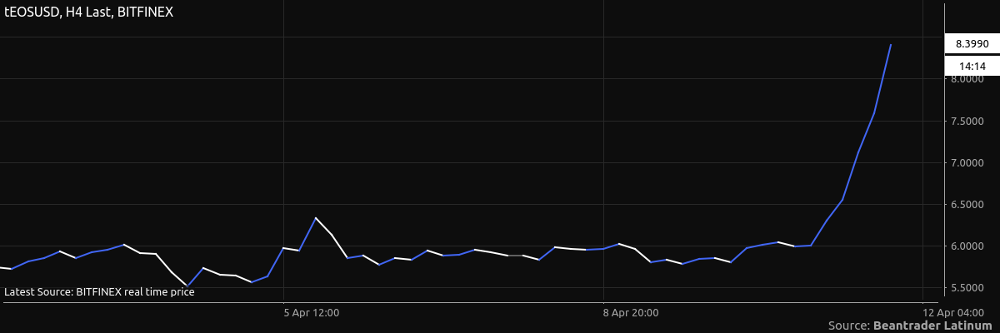
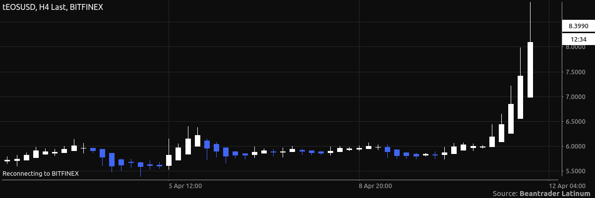

Chart Types¶
Candlestick¶
Displays the Open, High, Low, and Close price.
Candlestick Trend¶
Displays the Open, High, Low, and Close price. The previous candle is used when determining color.
Hollow Candlestick¶
Displays the Open, High, Low, and Close price. Bullish bars are hollow, bearish bars are filled.
Real Body¶
Displays the Open and Close price.
OHLC¶
Displays the Open, High, Low, and Close price.
HLC¶
Displays the High, Low, and Close price.
HL¶
Displays the High and Low price.
Area¶
Displays the Close price. The area from the baseline (zero) to the price is filled.
Line¶
Displays the Close price.
Colored Line¶
Displays the Close price. The line segments between each point are colored based on increase or decrease in price.
Step¶
Displays the Close price.
Histogram¶
Displays the Close price.
Dots¶
Displays the Close price.
Invisible¶
Displays nothing. Use this if you have a study applied and are not interested in the price.
Heikin-Ashi¶
Displays an averaging of current and previous bars.
Column¶
Displays values in columns, similar to Histogram but Column have width.
Only used by studies